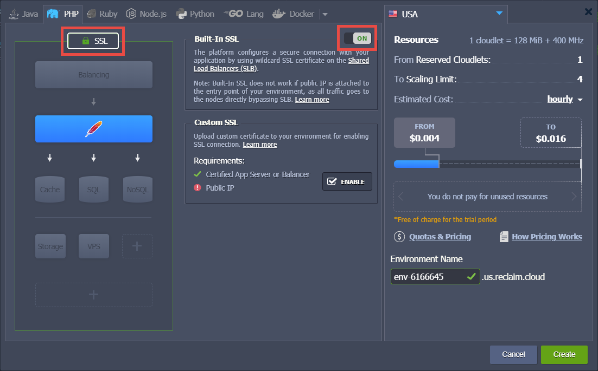
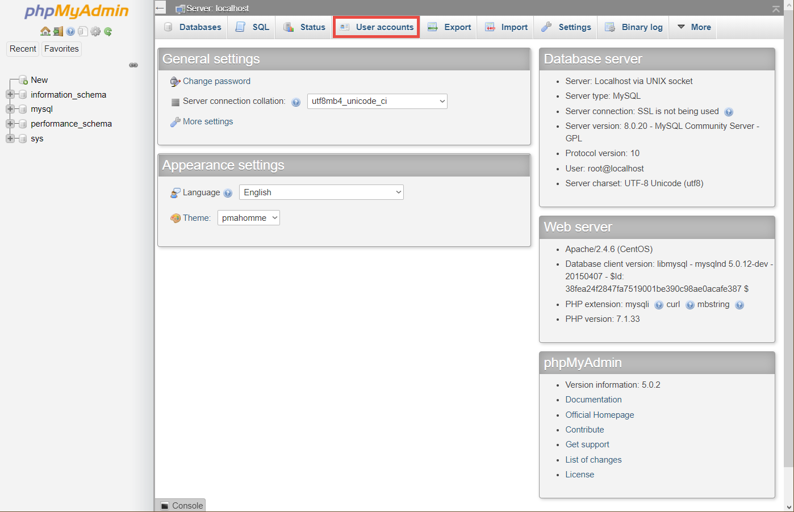
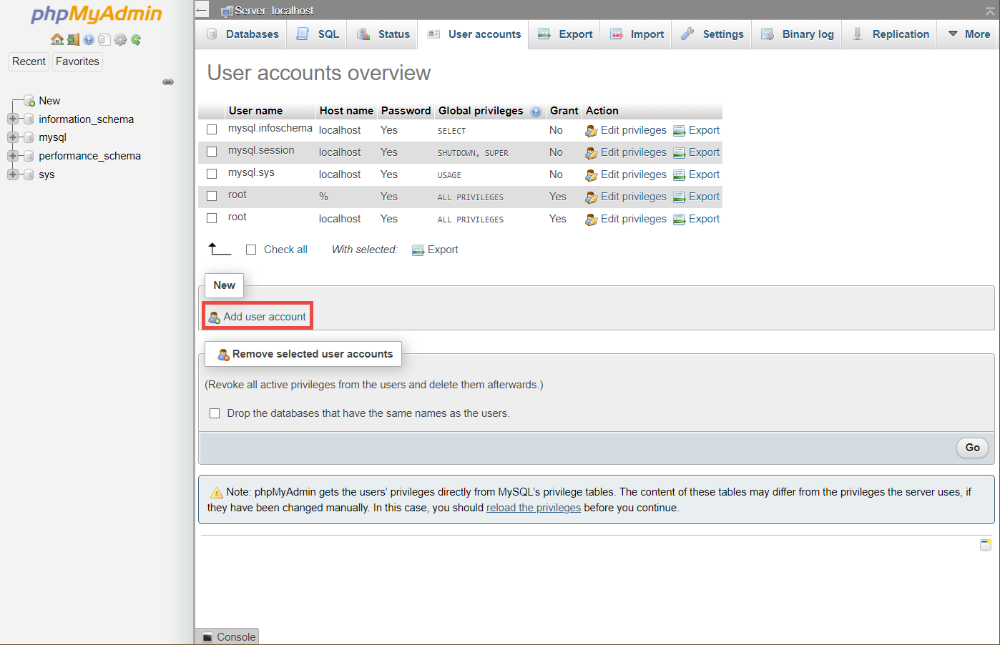
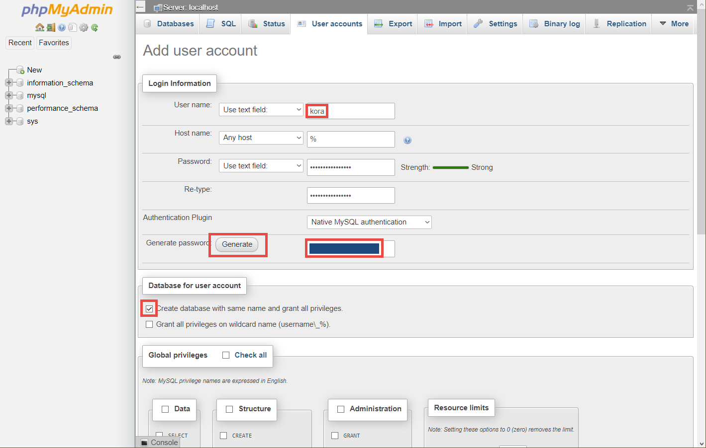
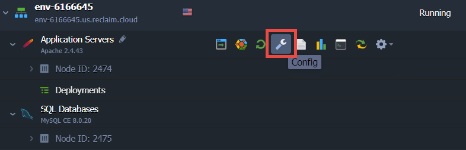
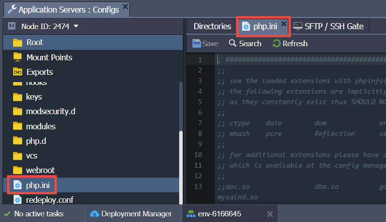
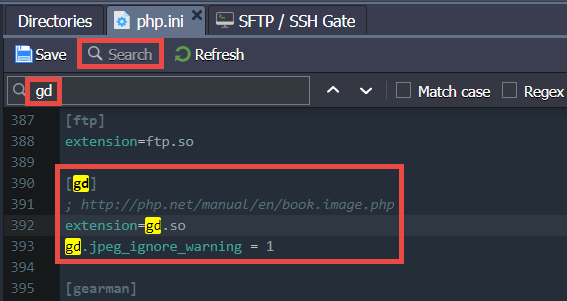

Installing Kora on Reclaim Cloud
This guide is for installing Kora in a Reclaim Cloud environment.
Set up Scalable Cloud Environment
-
After creating an account, begin from your Dashboard. Select "Create New Environment" in the middle, or "NEW ENVIRONMENT" in the top-left:

-
In the module that appears, Select PHP Tab. It will look like this:

-
Turn on SSL by clicking "SSL" in left panel area, then toggling the switch at the top of the middle panel to "On".

-
Leave Apache layer, which is the blue block with a red feather, as-is; Click on "SQL" layer under it to add MySQL Layer. Use the dropdown on this block to change from MariaDB to MySQL SE 8.0.20.

-
While viewing the settings for the Apache layer, in middle panel area, use the PHP dropdown menu to change to version 7.2.32.

In the same area area, use slider for "Application Servers" to set Scaling Limit to at least 8 cloudlets, which will set the max reserve to at least Kora's minimum RAM requirement of 1 GB. The reserve can be set higher than this, if desired; doing so will allow your environment to use more CPU and/or RAM if your installation requires it at some future time. You will only be charged for higher processing power if your Kora website has enough people using it simultaneously to require the extra resources.
Leave the reserved level on 1 cloudlet

-
Click on "SQL" block to adjust the MySQL Layer settings. In middle panel area, use slider for "Application Servers" to set Scaling Limit to at least 8 cloudlets, which will set the max reserve to at least Kora's minimum RAM requirement of 1 GB. Either leave the reserved level at its default of 3 cloudlets, or drop it to 1 cloudlet.
To note once again, the reserve can be set higher than this, if desired; doing so will allow your environment to use more CPU and/or RAM if your installation requires it at some future time. You will only be charged for higher processing power if your Kora website has enough people using it simultaneously to require the extra resources.
The minimum settings would look like this:

-
Feel free to review all these settings again, but you can always adjust these later if needed (see XXX below). When ready, click "Create" in lower-right to initialize the environment.
Set up MySQL Database
-
After the environment initializes, you'll receive emails. One, with subject similar to "New Reclaim Cloud Environment... Created" lets you know the process has completed. Other email, with subject similar to "MySQL Node Successfully Added to Your Reclaim Cloud Environment," contains important login information for MySQL. Do not delete this email without first saving the host, username, and password contained within.
In your dashboard, your newly initialized environment's components will be visible. There will be a notification on the right-hand side informing you that this process has completed. you can hover on that notification to make the "X" visible, then click on it to dismiss this notification.

-
Hover over the "Node" contained within "SQL Databases" and click icon for "Open in Browser".

-
This will open a new tab with a phpMyAdmin login screen.

Use credentials from the MySQL email to log into phpMyAdmin; the username is commonly root.
-
Once logged in, the main dashboard will load.

Click button for "User Accounts" in top menu, highlighted in the screenshot above. This will bring up the list of existing users.

-
Click on "Add user account" (highlighte in the previous screenshot) to reach the page for adding new database users.

-
In "User name" field, write kora. Leave the "Host name" defaulted to the "Any host" dropdown selection and the default text field content. For the password, click the "Generate" button for "Generate password." This will populate both password text boxes and provide a plain-text display of the generated password. Copy this password somewhere safe as you will need it when setting up Kora. Finally, check the box for "Create database with same name and grant all privileges."

-
Scroll to bottom and click "Go" button in lower-right.
-
Close this browser tab and return to the main Reclaim Cloud tab.
Configure PHP Modules
-
In the dashboard, hover over "Application Servers" and click on wrench icon for "Config."

This will bring up a panel at the bottom of the window, with a tab labeled "Application Servers : Configs".

-
On left-hand side of this panel, scroll down and select "php.ini." The file will load on the right-hand side, as a new tab labeled "php.ini."

-
Use Search function to locate each of these modules:
gd,imagick,imap,intl,ldap,pgsql(NOT "pdo_pgsql"),snmp,soap,wddx,xmlrpc,xslEach of their code blocks will look similar to this one, for
gd:
Some modules will have more lines in their block than others. For instance,
imagickhas a comment line with the url where the module is found, the line for enabling the extension, and then two lines for configuring the module.[imagick] ; http://php.net/manual/en/book.imagick.php ;extension=imagick.so imagick.locale_fix = 0 ; Fixes a drawing bug with locales that use ',' as float separators imagick.progress_monitor = 0 ; Used to enable the image progress monitorIn this case, enable
imagickby removing the;from the line;extension=imagick.soso that the section looks like:[imagick] ; http://php.net/manual/en/book.imagick.php extension=imagick.so imagick.locale_fix = 0 ; Fixes a drawing bug with locales that use ',' as float separators imagick.progress_monitor = 0 ; Used to enable the image progress monitorDo this for all 11 of the listed modules. For
wddx, remove the#which is there instead of;. -
Enable the mail function. Search for "smtp" to find the section that begins with:
[mail] ;SMTP = {mail host} ;port = {port-number} The first two lines of this module defines the server location and the port. The full code of this section is not reproduced here and portions have been changed, for security purposes. Remove the `;` from the beginning of each of these two lines, and write down the specified value for `SMTP =`. This will be used when setting up the email function in Kora. -
Once you have enabled all the modules and the mail configurations, Click "Save" at the top of this panel area.
-
After saving, hover on "Application Servers" and click on the icon for "Restart Nodes."
Click "Yes" for the warning for "Restart Apache nodes?"
-
Hover on "Application Servers" and click on the icon for "Open in Browser"

New tab will open with a page displaying information generated by the function
phpinfo(). The top of it will look like this:
You can use this page to confirm that all ten of these modules have been loaded; those that are loaded have their own section headings. If any are not loaded, return to the php.ini file to confirm you properly deleted the semi-colon from the
extension=...line that corresponds to the module in question. -
When finished, close this browser tab.
Import and Install Kora
-
Back at the dashboard, hover on "Application Servers" and click on icon for "Web SSH"

-
Display will open with an SSH terminal

-
Use the following command to navigate to the directory just above your environment's Document Root (contents of Document Root is what's visible via your environment's URL)
cd /var/www/webrootYour terminal will look like this:

-
Open a new browser tab and navigate to https://github.com/matrix-msu/kora/releases. Click the dropdown menu for "Assets" of most recent release. Right-click on the "Source Code (zip)" file link and copy this file's URL.
-
Return to the Reclaim Cloud environment tab. Type
wgetthen a space, then paste the file URL you just copied using a keyboard shortcut; on Windows the shortcut combination to paste is ctrl + v. This is an example of what your command will look like after pasting:wget https://github.com/matrix-msu/kora/archive/3.0.0.zip
-
Hit "Enter" and let the command run. During the file transfer process, your terminal will look similar to this:

The file will be named the last part of the URL where you fetched it from. In this example, the name is
3.0.0.zip. If needed, you can run the commandlsto view a list of the directory's contents. The newly-added zip file should be listed. -
Run the following command to unzip this file into this directory. Make sure to change the filename in the command to match the one that is listed.
unzip 3.0.0.zipThe system will create a new directory with the contents of this zip in a directory "kora-[zip-file-name]". In this example, the directory is named "kora-3.0.0"; if needed, you can again use
lsto confirm the directory's name. You can also see the name of the directory at the beginning of each line that displays after running theunzipcommand:
-
Use the move command to rename the directory as "kora". Be sure to use the exact directory name that displayed. An example of this command is:
mv kora-3.0.0 koraFor the
mvcommand, the first part is the name of the current directory/file, and the second part is the desired name to change it to. If you wish, runlsonce again to confirm the name change -
Use the following command to change your location to the "kora" directory:
cd koraAfter the
mvandcdcommands, your terminal will look similar to this:
-
Use the copy command
cpto make a new copy of the ".env.example" file, but with the name ".env" This command looks like:cp .env.example .envWhen
cpis successful, there won't be a message; the terminal will simply create a new line with the command prompt. So your terminal will look like this:
-
Use the
nanofile editing program built into this version of Linux to make changes to the .env file. The command is:nano .envThis file will look similar to this when displayed by
nano:
You can navigate around this file by using the directional arrows on your keyboard. Locate the block of lines that say:
DB_HOST=localhost DB_DATABASE=kora DB_USERNAME=kora DB_PASSWORD=kora DB_DEFAULT=mysql DB_PREFIX=kora_ -
For the
DB_HOST=line, change "localhost" to the "host" you saved from the MySQL email. Pasting the host requires a nano-specific keyboard shortcut; for Windows machines this is ctrl + shift + vIf you used "kora" for the user you set up in phpMyAdmin, and you checked the "Create database with same name and grant all privileges" box when creating it, leave the
DB_DATABASE=andDB_USERNAME=lines alone; otherwise, change them to match the username and database names you created in phpMyAdmin.On the
DB_PASSWORD=line, change "kora" to the password you saved from the process of creating the user in phpMyAdmin. Again, use the nano-specific keyboard shortcut for pasting, if copied from elsewhere. -
Leave the rest of this file alone. Use the proper keyboard shortcut for exiting nano on your computer; for a Windows machine, this is crtl + x. The system will ask you if you wish to save your changes; hit
yfor yes. Then hit "enter" to confirm that the file name is ".env" -
Now, change your directory to public:
cd public -
Copy the ".htaccess.example" file in this directory, as ".htaccess" cp .htaccess.example .htaccess This guide explains setting up kora such that it is accessible at {reclaim-cloud-url}/kora/. For other configurations, change accordingly. Edit this .htaccess file with nano: nano .htaccess Find section of this file: RewriteEngine On #RewriteBase #add base url ex: www.website.com[/this part is your base url for this file up to "public"] #RewriteBase /your_base_url From this final line, remove
#and then change "/your_base_url" to "/kora". This tells the system that your Kora install's url will be example.org/kora Save this file using the same process as explained in the case of editing ".env" Leave the file name as .htaccess Navigate upward to the main kora directory: cd .. Run the following command to install Kora php artisan kora:install Copy the last line of the successful installation message, which has your default admin password for your kora installation. Reclaim Cloud has default permissions levels that will automatically meet the READ and WRITE permissions requirements for the specified folders in the successful installation message. Navigate to your Root Directory; in this case, use the following two commands: cd .. cd ROOT Create a symbolic link in this directory that corresponds to the path you wrote in the .htaccess file before. For example, if you changed "/your_base_url" to "/kora", use this command for your symbolic link creation: ln -s ../kora/public kora After finishing this, hover on "Application Servers" and select "Open in Browser". In the new tab, the phpinfo() page will again open. Add "/kora" to the URL and load this page, which should be the Kora login screen. Log in using "admin" as the username and the password from the installation success message, which you previously saved. Further configure via the "Kora Configuration File" page, accessible in the right navbar menu, under "Management" Set up reCAPTCHA Set up GitLab if desired For Mail, provide the value from the "SMTP = " line saved from the config file before for the "Mail Host" text box. More than likely, the value saved from before will match the default value in Kora Next, type in an address that you would like the email to appear from. This can technically be anything you wish, but it is good practice for the portion after the @ symbol to match your Kora installation's main url. For example, if your installation is accessible at the url https:\/\/env-0000000.us.reclaim.cloud/kora, you could set this email address to "kora-admin@env-0000000.us.reclaim.cloud". Set the "Mail From Name" to whatever you prefer, such as your own name, some name that references your specific version of Kora, or even a generic "Kora Administrator". Leave "Mail User" and "Mail Password" with their default settings in Kora. Click "Update Configuration File" at the bottom of the page.